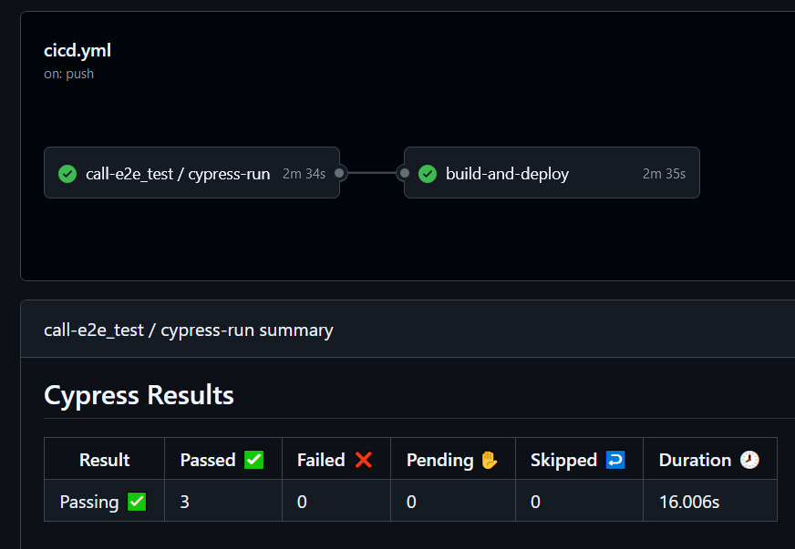
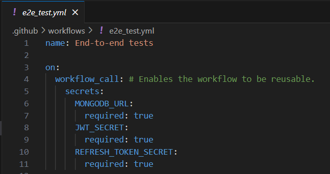
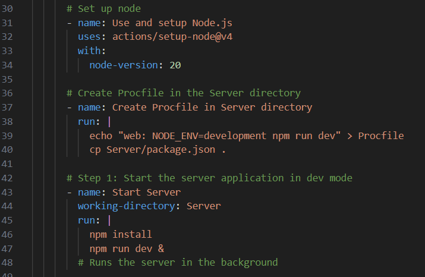
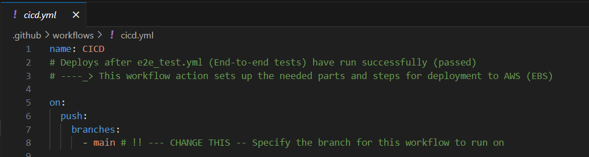
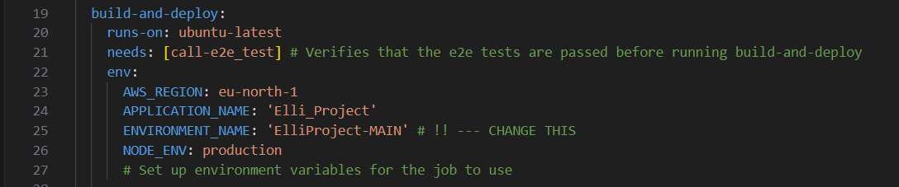
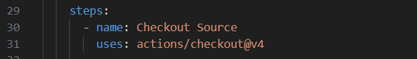

Automation
Cloud deployment: CI/CD Pipeline

Pipeline of testing and deployment in Github
{kind=link}
I have planned the development environment to be automated via the Github repository.
Two branches in the repository are included in the pipeline: main and AWS-Elli. Main branch will deploy to the MAIN EBS environment, when AWS-Elli branch will deploy to the TEST EBS environment. The use case with this is, that we would first deploy to the testing environment and if that goes successfully, we can deploy to the main environment. The main environment would be the one that is standing and live all the time and would not receive constant updates. The test environment can be used somewhat freely to test the deployments.
Summary of the Workflow flow
- Triggered on a push to the main or AWS-Elli branch.
- Runs end-to-end tests (e2e_test.yml).
- Prepares backend and frontend components for deployment.
- Packages the application into a deployment zip.
- Deploys to AWS Elastic Beanstalk and configures runtime environment variables.
e2e_tests.yml
{kind=link}

Reusable Workflow: This workflow can be called by other workflows (workflow_call event).
Secrets Injection: Uses MONGODB_URL, JWT_SECRET and REFRESH_TOKEN_SECRET secrets for configuring the environment.
{kind=link}
![ Preparing server Noje.js setup: Installs Node.js (v20) for the runner. Procfile creation: Creates a Procfile in the Server directory for development configuration. This is the variable that changes the code structure to be either local development or cloud. Environment set as “development” will use localhost:8080 and be run as it was local. Environment set as “production” will set up the code to use the cloud environment’s URL and ports. For the end-to-end tests we only need it to run in the Github virtual machine so setting it to development works for this purpose. Start server: Installs server dependencies and starts the server application in development mode, running it in the background.](images/e2e_3.png){kind=link}
{kind=link}
{kind=link}
{kind=link}
{kind=link}
cicd.yml
This is the “main” yml file that handles the deployment to the EBS environment.

Triggers: Runs when code is pushed to the main branch (or a specified branch).
{kind=link}
{kind=link}

Executes only if call-e2e_test succeeds (needs: [call-e2e_test]).
![ Executes only if call-e2e_test succeeds (needs: [call-e2e_test]).](images/cicd_3.png){kind=link}

Pulls the source code from the repository to the runner.
{kind=link}
{kind=link}
{kind=link}
{kind=link}
{kind=link}
{kind=link}
Vefifying
Lists the contents of the deployment package to ensure it contains all required files.
{kind=link}
{kind=link}
{kind=link}